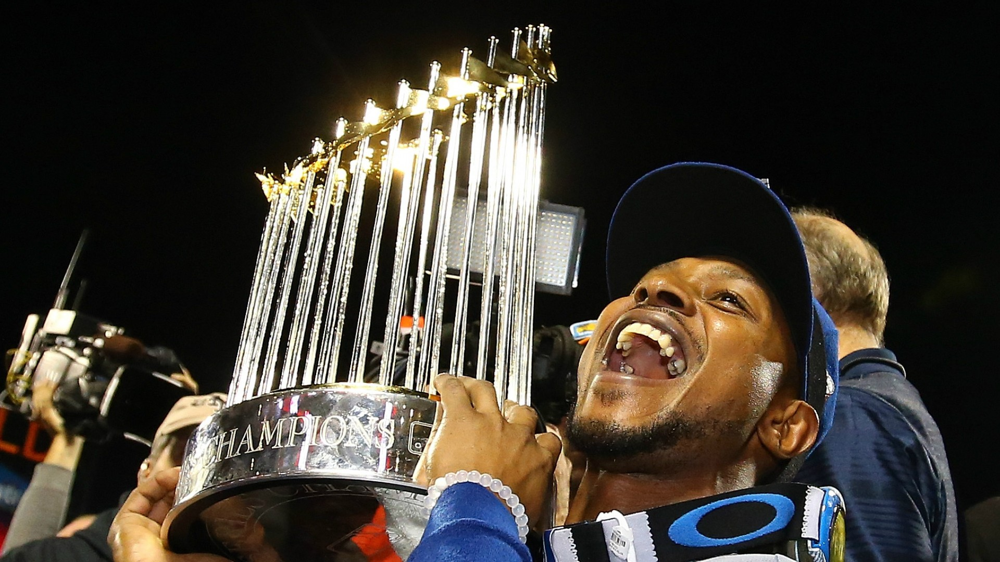

Más de un siglo de historia del béisbol
Las Grandes Ligas de Béisbol, conocidas internacionalmente
como Major League Baseball (MLB), representan el nivel más
importante del béisbol profesional de Estados Unidos y Canadá.
Su historia está marcada por grandes rivalidades, jugadores
legendarios, innovaciones deportivas, récords extraordinarios
y acontecimientos que transformaron tanto el deporte como
la sociedad.
La MLB está integrada históricamente por dos ligas:
la Liga Americana y la Liga Nacional. Aunque hoy forman
parte de una misma organización, durante gran parte de su
existencia funcionaron como circuitos separados, con sus
propias reglas, equipos y campeonatos.

La Serie Mundial es el campeonato que enfrenta a los mejores
equipos de ambas ligas al final de la postemporada. Ganarla
representa uno de los mayores logros para una franquicia y
sus aficionados.
Línea del tiempo de la MLB
1876 - Nace la Liga Nacional
La Liga Nacional se fundó en 1876 y se convirtió en una
de las organizaciones fundamentales del béisbol
profesional moderno. Durante varios años fue el principal
circuito de las Grandes Ligas, antes de la aparición de
una liga rival.
1901 - Fundación de la Liga Americana
La Liga Americana surgió de la reorganización de la
Western League, impulsada por Ban Johnson. En 1901
comenzó a competir como una liga mayor y atrajo a
jugadores y aficionados con nuevos equipos y contratos.
Entre sus franquicias históricas se encontraban los
Chicago White Sox, Boston Americans, Detroit Tigers
y Philadelphia Athletics. Los Chicago White Sox
terminaron como campeones de la primera temporada
de la Liga Americana.
1903 - Primera Serie Mundial moderna
Después de la rivalidad inicial entre las dos ligas,
sus campeones se enfrentaron en una serie para decidir
al mejor equipo del béisbol profesional. Los Boston
Americans derrotaron a los Pittsburgh Pirates en la
primera Serie Mundial moderna.
La Serie Mundial se convirtió en una tradición y en
el objetivo principal de cada temporada. Aunque no
se disputó en 1904 ni en 1994, se ha mantenido como
uno de los acontecimientos más importantes del deporte.
1919 - El escándalo de los Black Sox
Los Chicago White Sox eran uno de los equipos más
fuertes de su época. Sin embargo, ocho de sus jugadores
fueron acusados de participar en un acuerdo con
apostadores para alterar el resultado de la Serie
Mundial de 1919, que ganó Cincinnati.
Los jugadores fueron absueltos en el juicio penal,
pero el comisionado Kenesaw Mountain Landis los
expulsó permanentemente del béisbol profesional.
El escándalo dañó la confianza del público y reforzó
la necesidad de proteger la integridad del juego.
1920 - Comienza la era de Babe Ruth
Babe Ruth pasó de ser un lanzador destacado a convertirse
en uno de los bateadores más famosos de la historia.
Su capacidad para conectar cuadrangulares ayudó a
popularizar un estilo de juego más ofensivo.
Con los New York Yankees se convirtió en una figura
central de la llamada era del bateo poderoso. Su
popularidad contribuyó a que el equipo alcanzara una
enorme relevancia y a que el béisbol se consolidara
como uno de los principales espectáculos deportivos
de Estados Unidos.
1927 - Los Yankees de Murderers' Row
Los Yankees de Nueva York de 1927 son considerados
uno de los equipos más dominantes de todos los tiempos.
Con Babe Ruth y Lou Gehrig como figuras principales,
el equipo ganó la Serie Mundial.
Ruth conectó 60 cuadrangulares durante esa temporada,
una marca extraordinaria para su época que permaneció
como récord de la Liga Americana durante décadas.
1933 - Se celebra el primer Juego de Estrellas
La MLB organizó el primer All-Star Game para enfrentar
a los mejores jugadores de la Liga Americana contra
los de la Liga Nacional. El encuentro permitió que
las estrellas de diferentes equipos compartieran
el mismo terreno de juego.
Con el tiempo, el Juego de Estrellas se convirtió
en una de las tradiciones más reconocidas del béisbol,
reuniendo a los jugadores más destacados de cada
temporada.
1947 - Jackie Robinson rompe la barrera racial
Durante décadas, las Grandes Ligas mantuvieron una
barrera racial que impedía a los jugadores negros
participar en sus equipos. Jackie Robinson debutó
con los Brooklyn Dodgers el 15 de abril de 1947
y ayudó a terminar con esa exclusión en la Liga Nacional.
Su talento, disciplina y valentía frente al racismo
lo convirtieron en una figura histórica dentro y fuera
del campo. Ese mismo año, Larry Doby se convirtió
en el primer jugador negro en la historia de la
Liga Americana al debutar con Cleveland.
La integración del béisbol fue un avance importante
para el deporte y para la lucha por los derechos civiles,
aunque el racismo y la discriminación no desaparecieron
de inmediato.
1950-1960 - Expansión y nuevas generaciones
Durante estas décadas, el béisbol se expandió hacia
nuevas ciudades y regiones. Aparecieron nuevas
franquicias y algunos equipos se trasladaron para
alcanzar mercados más grandes.
También destacaron jugadores como Willie Mays,
Hank Aaron, Mickey Mantle y Roberto Clemente.
Sus actuaciones elevaron el nivel competitivo y
ampliaron la popularidad del deporte.
1969 - Cambia el formato de las ligas
La expansión de equipos llevó a dividir cada liga
en divisiones. Esta modificación creó nuevas rutas
para clasificar a la postemporada y aumentó la
importancia de las rivalidades divisionales.
Los New York Mets sorprendieron al mundo del béisbol
al ganar la Serie Mundial de 1969, demostrando que
una franquicia relativamente nueva también podía
alcanzar la cima.
1973 - La Liga Americana adopta el bateador designado
La Liga Americana introdujo la regla del bateador
designado (DH), que permite que un jugador batee
en lugar del lanzador sin que este tenga que salir
del encuentro.
La medida buscaba aumentar la ofensiva y generar
más oportunidades de anotación. También provocó
un debate entre quienes apoyaban un béisbol más
ofensivo y quienes preferían que los lanzadores
participaran en el turno al bate.
La regla se extendió a la Liga Nacional en 2022,
unificando esta parte del reglamento en ambas ligas.
1970-1980 - La agencia libre transforma el mercado
Los cambios laborales y los acuerdos entre jugadores
y propietarios ampliaron las posibilidades de que
los peloteros cambiaran de equipo al terminar sus
contratos. La agencia libre transformó los salarios,
las negociaciones y la manera en que las franquicias
construían sus plantillas.
Esta etapa consolidó el poder de los sindicatos
de jugadores y modificó profundamente la economía
del béisbol profesional.
1994 - Una huelga cancela la Serie Mundial
Un conflicto laboral entre jugadores y propietarios
provocó una huelga que interrumpió la temporada de
1994. Por primera vez desde 1904, la Serie Mundial
no se disputó.
La cancelación decepcionó a millones de aficionados
y afectó la imagen del deporte. La temporada de
1995 se reanudó con cambios en el formato de
clasificación a los playoffs.
1995 - Se fortalece la postemporada
Con la llegada del sistema de comodines, equipos
que no ganaban su división podían acceder a los
playoffs gracias a sus buenos resultados.
Esto aumentó la cantidad de equipos con posibilidades
de competir por la Serie Mundial.
En 1997, los Florida Marlins se convirtieron en el
primer equipo en ganar la Serie Mundial después
de clasificarse como comodín.
1997 - Comienzan los partidos interligas
La MLB permitió que equipos de la Liga Americana
y la Liga Nacional se enfrentaran durante la
temporada regular. Hasta entonces, los encuentros
entre ambas ligas se concentraban principalmente
en la Serie Mundial y los partidos de exhibición.
Los juegos interligas crearon enfrentamientos
especiales, nuevas rivalidades y oportunidades
para que los aficionados compararan directamente
a equipos de ambos circuitos.
1998-2001 - La era de los cuadrangulares
La persecución del récord de cuadrangulares en una
temporada protagonizada por Mark McGwire y Sammy Sosa
en 1998 atrajo enorme atención. En 2001, Barry Bonds
estableció la marca de 73 cuadrangulares en una
temporada regular.
Sin embargo, estos años también quedaron asociados
con las controversias por el uso de sustancias
para mejorar el rendimiento, que años después
provocaron investigaciones y debates sobre la
legitimidad de algunas marcas.
2000 - Las ligas pasan a compartir una organización central
La Liga Americana y la Liga Nacional dejaron atrás
buena parte de su administración independiente
para funcionar bajo una estructura centralizada
de la MLB. Aunque conservaron sus nombres y
tradiciones, la organización de las Grandes Ligas
se integró cada vez más.
2004 - Los Red Sox terminan una larga sequía
Los Boston Red Sox derrotaron a los New York Yankees
en la Serie de Campeonato de la Liga Americana,
después de ir perdiendo la serie por tres juegos
a cero. Ningún equipo había remontado esa desventaja
en una serie de postemporada al mejor de siete
dentro de las Grandes Ligas.
Después, Boston ganó la Serie Mundial de 2004,
poniendo fin a una sequía de campeonatos que
se remontaba a 1918.
2016 - Los Chicago Cubs terminan una espera histórica
Los Chicago Cubs ganaron la Serie Mundial de 2016
al derrotar a los Cleveland Indians en siete juegos.
El campeonato terminó con una espera de 108 años
desde su título anterior, una de las sequías más
famosas del deporte profesional.
2020 - Una temporada marcada por la pandemia
La pandemia de COVID-19 obligó a modificar el
calendario y las condiciones de competencia.
La temporada regular se redujo a 60 juegos y
se aplicaron protocolos sanitarios especiales.
Los Angeles Dodgers ganaron una Serie Mundial
disputada en un estadio neutral, en Arlington,
Texas. Fue una temporada excepcional que mostró
la capacidad de adaptación de la liga.
2022 - Cambios en las reglas y expansión de los playoffs
La Liga Nacional adoptó de manera permanente el
bateador designado, igualando la regla con la
Liga Americana. También se amplió la postemporada
para incluir a más equipos y se introdujeron
cambios destinados a mejorar el ritmo del juego.
2023 - Reloj de lanzamiento y nuevas reglas
La MLB incorporó un reloj de lanzamiento, restricciones
a los intentos de retirar corredores y bases más
grandes. El objetivo fue reducir los tiempos muertos,
fomentar el robo de bases y hacer los partidos
más dinámicos.
Estos cambios representaron una de las modificaciones
más visibles del béisbol moderno y generaron debates
entre jugadores, entrenadores y aficionados.
Personajes que hicieron historia
La historia de las Grandes Ligas no puede entenderse
sin los jugadores, dirigentes y pioneros que cambiaron
la manera de jugar y de entender el béisbol.
Babe Ruth - El poder ofensivo
George Herman "Babe" Ruth revolucionó el juego con
sus cuadrangulares y su enorme popularidad. Fue
protagonista de la época dorada de los Yankees
y contribuyó a que el bateo poderoso se convirtiera
en una de las grandes atracciones del deporte.
Jackie Robinson - Un pionero de la integración
Robinson rompió la barrera racial en la Liga Nacional
en 1947. Su legado va más allá de sus estadísticas:
soportó amenazas y discriminación mientras abría
oportunidades para futuras generaciones de jugadores.
La MLB conmemora su legado cada 15 de abril con
el Jackie Robinson Day.
Hank Aaron - Una leyenda del cuadrangular
Aaron conectó 755 cuadrangulares durante su carrera
y superó la marca de Babe Ruth en 1974. Alcanzó
este logro en medio de insultos y amenazas racistas,
y se convirtió en un símbolo de excelencia y
perseverancia.
Willie Mays - Defensa y ofensiva extraordinarias
Mays fue uno de los jugadores más completos de
la historia. Destacó por su poder al bate, velocidad,
capacidad defensiva y jugadas memorables en los
jardines. Su carrera influyó en generaciones
posteriores de peloteros.
Roberto Clemente - Talento y compromiso social
El puertorriqueño Roberto Clemente brilló con los
Pittsburgh Pirates y fue reconocido por su capacidad
defensiva y ofensiva. También destacó por su
compromiso humanitario. Murió en 1972 cuando
viajaba para llevar ayuda a víctimas de un terremoto
en Nicaragua.
Lou Gehrig - El hombre de hierro original
Gehrig fue una de las grandes figuras de los Yankees
durante las décadas de 1920 y 1930. Su racha de
2,130 partidos consecutivos se mantuvo como récord
durante décadas. Su despedida en 1939, tras ser
diagnosticado con esclerosis lateral amiotrófica,
se convirtió en uno de los momentos más recordados
de la historia deportiva.
Joe DiMaggio - Una racha casi imposible
El jardinero de los Yankees consiguió al menos
un hit en 56 partidos consecutivos durante 1941.
La racha sigue siendo uno de los récords más
admirados del béisbol por la dificultad de mantener
ese nivel de consistencia durante tantos encuentros.
Cy Young - Un nombre que se convirtió en premio
Cy Young fue uno de los lanzadores más dominantes
de las primeras décadas del béisbol moderno.
Su récord de 511 victorias en las Grandes Ligas
es una de las marcas más difíciles de alcanzar
bajo las estrategias actuales de rotación de
lanzadores.
En su honor, el premio Cy Young reconoce cada
temporada a los mejores lanzadores de cada liga.
Cal Ripken Jr. - La constancia como legado
Ripken Jr. disputó 2,632 partidos consecutivos,
superando la marca de Lou Gehrig en 1995.
Su récord se convirtió en un símbolo de resistencia,
disciplina y compromiso con el equipo.
Mariano Rivera - Dominio desde el bullpen
El panameño Mariano Rivera es considerado uno de
los mejores relevistas de todos los tiempos.
Fue pieza clave de los Yankees en sus campeonatos
y se convirtió en el primer jugador elegido
por unanimidad para ingresar al Salón de la Fama
del Béisbol en 2019.
Las estrellas internacionales
Jugadores de República Dominicana, Venezuela,
Puerto Rico, Cuba, México, Japón, Corea del Sur
y otros países han enriquecido la MLB.
Figuras como Fernando Valenzuela, Pedro Martínez,
Ichiro Suzuki, Albert Pujols y Shohei Ohtani
reflejan el carácter internacional que ha
adquirido el béisbol.
Polémicas que marcaron la MLB
El escándalo de los Black Sox (1919)
La acusación de que jugadores de los Chicago White Sox
se asociaron con apostadores para manipular la Serie
Mundial provocó una crisis de confianza. La expulsión
permanente de ocho jugadores se convirtió en una
advertencia sobre los riesgos de las apuestas
y la corrupción en el deporte.
La barrera racial
Durante décadas, los jugadores negros fueron excluidos
de las Grandes Ligas. Aunque la integración comenzó
en 1947, muchos jugadores enfrentaron insultos,
amenazas, desigualdad salarial y discriminación.
Este capítulo recuerda que la historia del béisbol
también está vinculada a la historia social de Estados
Unidos.
La huelga de 1994
Las diferencias sobre salarios, reparto de ingresos
y propuestas de control económico desembocaron en
un conflicto laboral. La cancelación de la Serie
Mundial afectó la relación entre los aficionados,
los jugadores y los propietarios.
La era de los esteroides
Durante las décadas de 1990 y 2000 surgieron
investigaciones sobre el uso de sustancias para
mejorar el rendimiento. Las controversias afectaron
la reputación de varios jugadores y generaron
discusiones sobre la validez de los récords
conseguidos durante ese periodo.
El informe Mitchell, publicado en 2007, examinó
el uso de sustancias para mejorar el rendimiento
en el béisbol. Desde entonces, la liga ha reforzado
sus políticas antidopaje, aunque el debate histórico
sobre algunas marcas continúa.
El robo de señales de los Houston Astros
En 2019 se conocieron investigaciones sobre un
sistema ilegal de robo de señales utilizado por
los Houston Astros durante la temporada de 2017
y parte de 2018. La MLB sancionó a la organización
y a sus responsables deportivos.
El caso generó un debate sobre la ventaja competitiva,
la tecnología y la confianza entre los equipos.
También puso en evidencia la necesidad de establecer
límites claros al uso de herramientas tecnológicas
para obtener información durante los partidos.
El debate sobre las reglas modernas
El reloj de lanzamiento, las restricciones defensivas
y la ampliación de los playoffs han generado opiniones
divididas. Algunos aficionados consideran que estas
medidas hacen el juego más rápido y emocionante;
otros creen que modifican tradiciones que han
caracterizado al béisbol durante generaciones.
La importancia de la Liga Americana
La Liga Americana ha tenido un papel fundamental en
la evolución de las Grandes Ligas. Desde su fundación
en 1901, ha sido escenario de rivalidades históricas,
equipos dominantes y cambios importantes en el reglamento.
Los New York Yankees, Boston Red Sox, Detroit Tigers,
Chicago White Sox, Baltimore Orioles, Oakland Athletics
y otras franquicias han construido parte de la identidad
del circuito. Sus enfrentamientos han producido momentos
memorables y rivalidades que continúan atrayendo a
millones de aficionados.
La introducción del bateador designado en 1973 fue
uno de los cambios más representativos de la Liga
Americana. Durante décadas, esta regla la distinguió
de la Liga Nacional, hasta que ambas adoptaron el
bateador designado de forma permanente en 2022.
La historia de la Liga Americana es, por lo tanto,
una parte esencial de la historia general de la MLB.
Sus jugadores, equipos y decisiones han ayudado a
transformar el béisbol en el deporte internacional
que conocemos hoy.